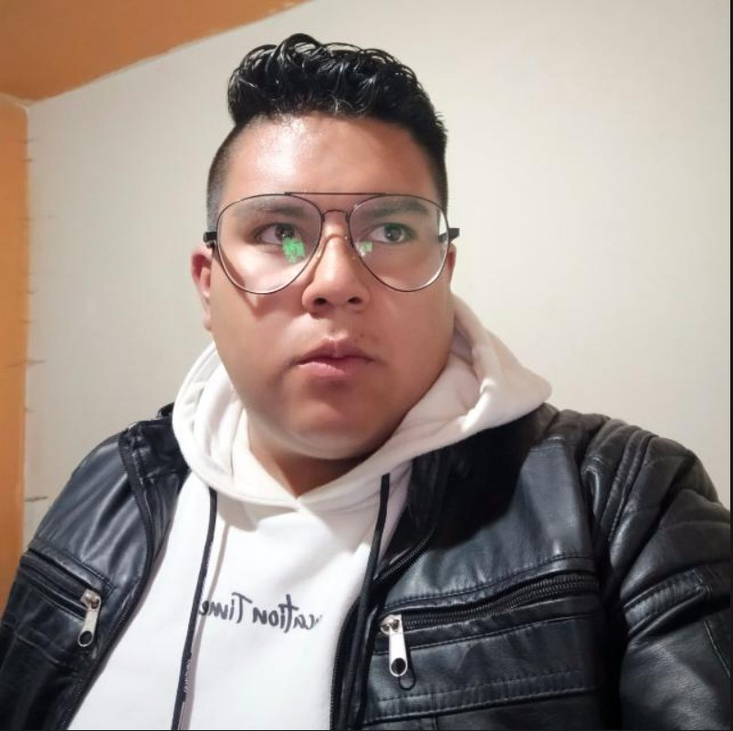

Proyecto 01 · InvestigacionObservar tambien es construir.


Desarrollador Frontend
Kevin
Pomatoca.
Diseño · Desarrollo web · Proyectos creativos
Sobre mi
Diseño experiencias digitales con personalidad, claridad y funcionalidad.
Soy Kevin Pomatoca, desarrollador frontend y apasionado por crear interfaces modernas, limpias y efectivas. Me interesa transformar ideas en proyectos visuales con un enfoque práctico, creativo y orientado a resultados.
Ver mis proyectosSeleccion de proyectos
Ideas que toman
forma visible.
Una vista breve de proyectos en movimiento, sus procesos y los sistemas que los sostienen.
Proyectos recientes
04 piezas seleccionadas
01 · Interfaz
↗Clon T
Exploracion de una experiencia movil de servicios.

02 · Frontend
↗Clon YouTube
Una interfaz de exploracion audiovisual responsive.

03 · Productividad
↗Brujula
Tablero hibrido Kanban + Scrum para tareas y proyectos.

04 · Interfaz
↗Clon WhatsApp
Una bandeja de chats movil con filtros y estados interactivos.
Cuaderno de proceso
Notas de mi
camino creativo.
Explora las ideas, herramientas y aprendizajes que acompañan cada proyecto.
01 / 06
Formacion continua